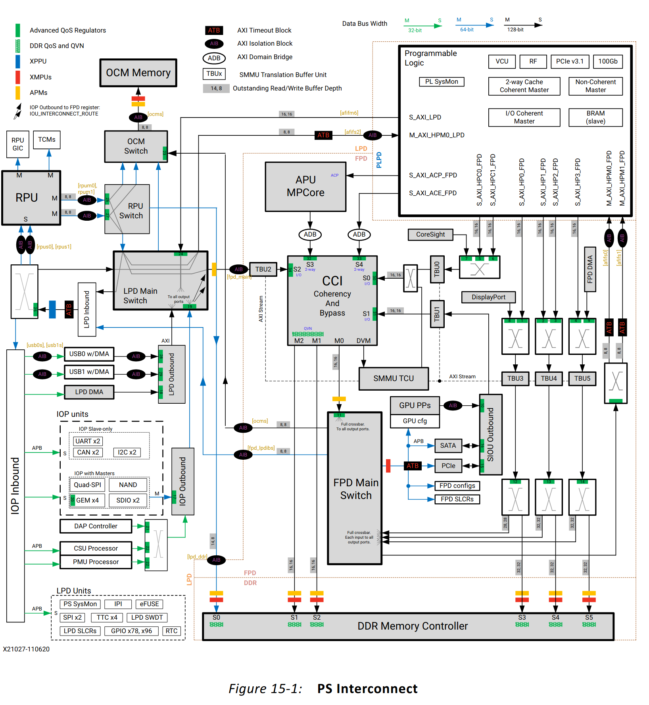
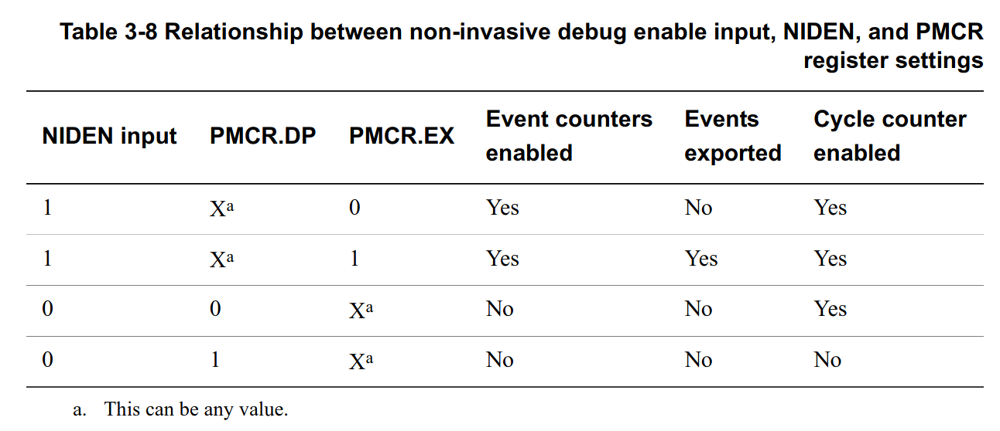
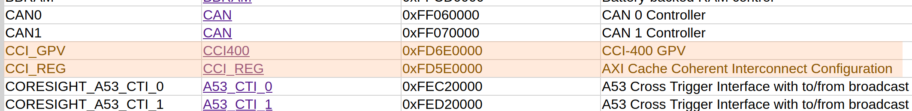
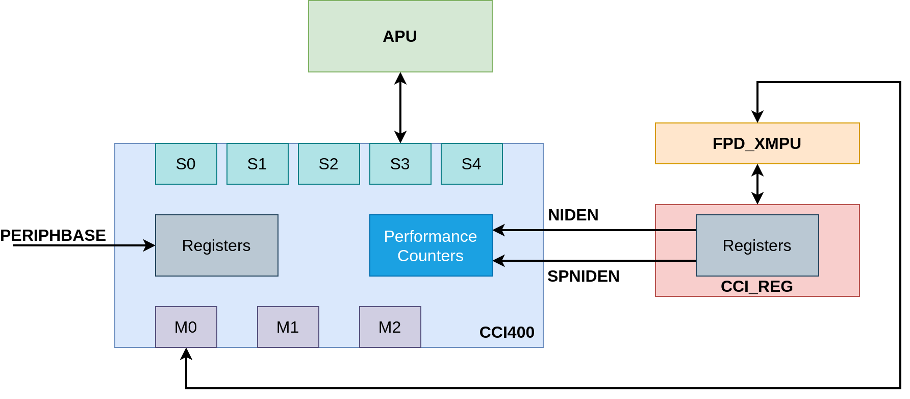
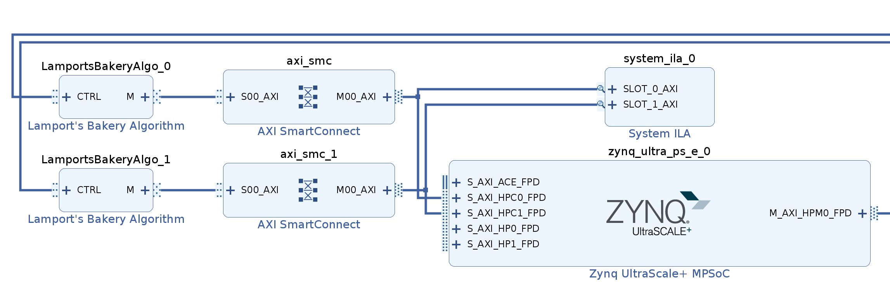

- on Sat 12 June 2021
In this blog post I describe my tinkering with the interconnect architecture of the Xilinx Zynq MPSoC. I specifically focus on the Performance Monitoring Unit (PMU) integrated into the Cache Coherence Interconnect (CCI).
I believe that most of the readers of my blog are already familiar with Xilinx Zynq® UltraScale+™ MPSoC, but for the sake of completeness let's do a quick introduction. Zynq MPSoC is a programmable device, combining a quad-core ARM Cortex-A53 (called Application Processing Unit (APU) in Xilinx-speak) and a relatively large FPGA (called Programmable Logic (PL) in Xilinx-speak) in one package. Sitting in between the two parts is an interconnect, more precisely ARM® CoreLink™ CCI-400 Cache Coherent Interconnect. The majority of the connections between the APU and PL go through this interconnect, which makes it one of the more important parts of the Processing System (PS).
In simple use cases the interconnect is mostly transparent for the users; from
the APU side, the memory transactions (i.e. reads and writes) come to the
interconnect and get routed to the appropriate output port (e.g. DDR controller
or PL manager ports - M_AXI_HPMx_FPD).
The overview of the CCI is shown in the excerpt from the UG1085 below - the CCI is shown prominently in its central location.

Linux driver for CCI PMU
Already provided in Linux is a driver for the Performance Monitoring Unit
(PMU) in the CCI. This driver is enabled with the CONFIG_ARM_CCI_PMU variable,
and for Zynq MPSoC this option is by default already turned on.
The driver prints a short message in the dmesg to indicate that it was
successfully loaded:
root@u96v2-sbc:~# dmesg | grep CCI
[ 3.218405] ARM CCI_400_r1 PMU driver probed
We can then use perf command to list all performance counters available in the system, and among those there are also listed those from the CCI-400:
root@u96v2-sbc:~# perf list
List of pre-defined events (to be used in -e):
[...]
CCI_400_r1/cycles/ [Kernel PMU event]
[...]
CCI_400_r1/si_rrq_hs_any,source=?/ [Kernel PMU event]
[...]
CCI_400_r1/si_wrq_hs_any,source=?/ [Kernel PMU event]
[...]
CCI_400_r1/si_wrq_hs_write_unique,source=?/ [Kernel PMU event]
CCI_400_r1/si_wrq_stall_tt_full,source=?/ [Kernel PMU event]
Although at this stage the performance counters are already accessible from the
system, except for the cycles counter no other counter is actually counting.
It turns out that the CCI-400 IP has some external signals which can disable the performance counters, even if the registers are properly configured.
Presented below is a table from the CCI-400 Technical Reference
Manual
(archive.today
link)
which shows that NIDEN must be high for Event counters to be
enabled.

Configuration
Looking at the register map for Zynq MPSoC in the UG1087 one can note that there are two modules associated with Cache Coherent Interconnect.

In my opinion, the documentation from Xilinx is a little bit vague, but I presume that the CCI_REG acts as a GPIO which then drives the debug inputs on the CCI module. Shown in the figure below is the CCI module together with this auxiliary module. This block diagram is based on my current understanding.

Accessing the configuration registers
With this in mind, one would be tempted to quickly change the value of NIDEN
input directly from user space with devmem utility.
root@u96v2-sbc:~# devmem 0xFD5E0000
Bus error
root@u96v2-sbc:~# devmem 0xFD5E0040
Bus error
Here we encounter another issue, namely the CCI_REG is protected by the Xilinx Memory Protection Unit (XMPU) and is only accessible from the secure environment.
Exception Levels
There are 4 exception levels defined in ARMv8 architecture.
- The user space runs in EL0
- The kernel space runs in EL1
- Hypervisors run in EL2
- Firmware runs in EL3
We can get the current Exception Level by reading the CurrentEL register.
- In user space this instruction throws
Illegal instruction- this is expected - In kernel space the reported level is 1:
[ 1091.821735] jan-level: EL = 1 - In FSBL the reported level is 3:
EL = 3
Patch for the First Stage BootLoader (FSBL)
Since we now know that FSBL runs in EL3, and we need EL3 to access the CCI_REG
module, we can patch the FSBL to configure the appropriate registers before
continuing with the boot. In this way, the NIDEN and also SPIDEN signals
will be already set high before the Linux boots.
I wrote the following patch and included it in the Bitbake recipe for the FSBL:
From 08450fd4c18d11fedf196c65c22f8abf83a6cc2a Mon Sep 17 00:00:00 2001
From: Jan Marjanovic <jan.marjanovic@outlook.com>
Date: Thu, 10 Jun 2021 19:20:25 +0200
Subject: [PATCH] Enable CCI debug (NIDEN and SPINDEN on CCI-400)
---
lib/sw_apps/zynqmp_fsbl/src/xfsbl_hooks.c | 39 +++++++++++++++++++++--
1 file changed, 36 insertions(+), 3 deletions(-)
diff --git a/lib/sw_apps/zynqmp_fsbl/src/xfsbl_hooks.c b/lib/sw_apps/zynqmp_fsbl/src/xfsbl_hooks.c
index 80a1314203..b0030a1d67 100644
--- a/lib/sw_apps/zynqmp_fsbl/src/xfsbl_hooks.c
+++ b/lib/sw_apps/zynqmp_fsbl/src/xfsbl_hooks.c
@@ -64,13 +64,46 @@ u32 XFsbl_HookAfterBSDownload(void )
}
#endif
+static void print_el(void) {
+ register uint64_t x0 __asm__ ("x0");
+ __asm__ ("mrs x0, CurrentEL;" : : : "%x0");
+ XFsbl_Printf(DEBUG_PRINT_ALWAYS, "EL = %x\r\n", x0 >> 2);
+}
+
+static void cci_reg_dump(void) {
+ // offsets from UG1087
+ uint64_t offsets[] = {0, 0x10, 0x14, 0x18, 0x1c, 0x40};
+
+ XFsbl_Printf(DEBUG_PRINT_ALWAYS, "CCI_REG: register dump\r\n");
+
+ for (int i = 0; i < sizeof(offsets)/sizeof(*offsets); i++) {
+ uint64_t offs = offsets[i];
+ u32 val = XFsbl_In32(XPAR_PSU_CCI_REG_S_AXI_BASEADDR + offs);
+ XFsbl_Printf(DEBUG_PRINT_ALWAYS, " offset %x = %x\r\n",
+ offs, val);
+ }
+}
+
+static void cci_reg_debug_enable(void) {
+ const uint64_t OFFS_CCI_MISC_CTRL = 0x40;
+
+ const uint32_t CCI_MISC_CTRL_NIDEN_MASK = 0x2;
+ const uint32_t CCI_MISC_CTRL_SPIDEN_MASK = 0x1;
+
+ XFsbl_Printf(DEBUG_PRINT_ALWAYS, "CCI_REG: debug enable\r\n");
+
+ XFsbl_Out32(XPAR_PSU_CCI_REG_S_AXI_BASEADDR + OFFS_CCI_MISC_CTRL,
+ CCI_MISC_CTRL_NIDEN_MASK | CCI_MISC_CTRL_SPIDEN_MASK);
+}
+
u32 XFsbl_HookBeforeHandoff(u32 EarlyHandoff)
{
u32 Status = XFSBL_SUCCESS;
- /**
- * Add the code here
- */
+ print_el();
+ cci_reg_dump();
+ cci_reg_debug_enable();
+ cci_reg_dump();
return Status;
}
--
2.25.1
The following is then the output of the FSBL with the patch:
Xilinx Zynq MP First Stage Boot Loader
Release 2020.2 Jun 10 2021 - 19:49:38
Reset Mode : System Reset
Platform: Silicon (4.0), Running on A53-0 (64-bit) Processor, Device Name: XCZU3EG
SD0 Boot Mode
PMU Firmware 2020.2 Jun 3 2021 19:28:36
PMU_ROM Version: xpbr-v8.1.0-0
Protection configuration applied
EL = 3
CCI_REG: register dump
offset 0 = 0
offset 10 = 0
offset 14 = 8000003F
offset 18 = 0
offset 1C = 0
offset 40 = 0
CCI_REG: debug enable
CCI_REG: register dump
offset 0 = 0
offset 10 = 0
offset 14 = 8000003F
offset 18 = 0
offset 1C = 0
offset 40 = 3
Exit from FSBL
We can note that the register at the offset 0x40 has changed from 0 to 3,
as we have requested.
Lamport's bakery algorithm
To provide a good test case for the cache coherent interconnect I have implemented distributed counting (i.e. multiple workers share one counter), and the synchronization is provided with Lamport's bakery algorithm.
AXI protocol itself provides a possibility (AxLOCK signals for exclusive
access) to perform atomic operations on memory and devices, but Lamport's
algorithm does not require any special locking primitives, only atomic reads
and writes.

In the Vivado design I have connected two LamportsBakeryAlgo IPs to both
HPC ports. Each IP can be configured to run for a defined number of loops,
and in each loop the counter will be incremented by 1. For each loop we
expect to see 5 writes in total:
- 1 write for setting the entering flag
- 1 write for setting the number
- 1 write for clearing the entering flag
- 1 write to do the actual work (increment the counter in this example)
- 1 write to clear the number (i.e. release the lock)
Similarly, we can expect the following to be the lower limit of the number of reads - if the flag is set the algorithm continues to poll it until it is cleared. In this highly-contended example we expect the numbers of reads to be much higher.
- N reads for the
maximum()function - N reads in the inner loop to check the entering flag
- N reads in the inner loop to check the number variable
Performance counters usage example
With the Performance Memory Unit enabled we can now start monitoring the values
of the counters with the perf tool.
I ran the two LamportsBakeryAlgo IP, each programmed to perform 100000 loops.
In addition, there is a third instance of Lamport's bakery algorithm, this
one running in the software and accessing the same memory locations as the two
FPGA implementations.
In parallel, I ran perf stat and selected the following events: read requests
(rrq) handshakes (hs) and write request (wr) handshakes on subordinate
ports 0 and 3. From the
UG1085
we can see that the APU is connected to port 3 on the CCI-400 and the HPC ports
are connected to port 0 on the interconnect.
root@u96v2-sbc:~# perf stat -e \
> CCI_400_r1/cycles/,\
> CCI_400_r1/si_rrq_hs_any,source=0/,\
> CCI_400_r1/si_wrq_hs_any,source=0/,\
> CCI_400_r1/si_rrq_hs_any,source=3/,\
> CCI_400_r1/si_wrq_hs_any,source=3/
^C
Performance counter stats for 'system wide':
1103648324 CCI_400_r1/cycles/
3207971 CCI_400_r1/si_rrq_hs_any,source=0/
1000000 CCI_400_r1/si_wrq_hs_any,source=0/
3158786 CCI_400_r1/si_rrq_hs_any,source=3/
636417 CCI_400_r1/si_wrq_hs_any,source=3/
4.138963536 seconds time elapsed
We see that expected 1000000 writes from the HPC ports (= 2 (instances) * 5 (per loop) * 100000 (number of loops)) and we also see the number of reads on the HPS port matches our expectation to be equal or greater than 1800000 (= 2 (total instances) * 3 * 3 (total instances = N) * 100000 (number of loops)).
Port 3 (APU port) is also used to load the program from the main memory or the SD card which slightly obscures the number of transactions performed by the algorithm itself, but the numbers match our expectations.
Limitations
It seems that the PMU in the CCI-400 does not provide all facilities needed for
perf record to work properly, it reports PMU Hardware doesn't support
sampling/overflow-interrupts. Try 'perf stat'.
Conclusion
In this post we have seen how tools commonly used in performance engineering can also be used to observe the behavior and performance of the FPGA. With the proliferation of heterogeneous architectures, having good tools to observe (and debug) the interfaces between individual components provides additional insight into the system.
It is yet to be explored if shouting at the Zynq MPSoC has any impact on the performance in terms of latency.